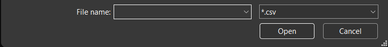

import streamlit as st
import pandas as pd
uploaded_file = st.file_uploader("Please upload a data file")
if uploaded_file is not None:
uploaded_df = pd.read_csv(uploaded_file)
st.write(f"Your dataframe has {len(uploaded_df)} rows.")
st.write(f"Your dataframe has {len(uploaded_df.columns)} columns.")
st.write(f"The columns in your dataframe are {', '.join(uploaded_df.columns)}.")
for col in uploaded_df.columns:
st.write(f"The first 5 values in column {col} are {', '.join(uploaded_df[col].head().astype('str'))}")4 File Uploads
File uploads can be a very powerful way of making your app more useful to users.
Let’s explore some of the things we can upload.
4.1 A simple csv file upload
Let’s start off by asking the user to upload any csv file of data.
We’ll then display some summary details about their dataframe and the first five values from each column.
Right click on the following link and choose ‘save as’ to download a sample file you can use in the following app: file
Note
The key thing to notice here is that we have two steps to getting a usable csv file for our next steps:
- save the output of
st.file_uploader()to a variable - read this output using the
pd.read_csv()method
4.1.1 Limiting the file types
By default, we haven’t restricted the file types that can be uploaded.
Let’s do that now!
import streamlit as st
import pandas as pd
uploaded_file = st.file_uploader("Please upload a csv data file", type=['csv'])
if uploaded_file is not None:
uploaded_df = pd.read_csv(uploaded_file)
st.write(uploaded_df.head())The app will try to prevent us from uploading the wrong type of file by only showing the correct type of file in our file explorer.

If we now try to upload a file with a different extension, we’ll receive a more user-friendly error message.

If we passed more possible extensions to the list, we would allow more extensions to be uploaded - but we’d also have to adapt our code to deal with each of the possible types that can be uploaded!
4.2 Uploading image files
We can easily upload image files too.
Let’s try loading an image file and displaying it for the user.
import streamlit as st
uploaded_image = st.file_uploader("Please upload an image file", type=['png','jpg','jpeg','bmp', 'bitmap'])
if uploaded_image is not None:
st.image(uploaded_image)4.2.1 Manipulating uploaded image files
We have to undertake a few extra steps to be able to manipulate image files people have uploaded.
We’ll be using the pillow library (referred to as PIL in code) - but it expects the image to be converted to a series of bytes first.
Once we’ve adjusted the image into the format pillow expects, we can use the library to run a range of edits and enhancements to our image.
Tip
The code below shows just a couple of the things pillow (PIL) can do - take a look at the documentation to find more!
Let’s have a go at it here.
import streamlit as st
import io
from PIL import Image, ImageEnhance
import PIL.ImageOps
uploaded_image = st.file_uploader("Please upload an image file", type=['png','jpg','jpeg','bmp', 'bitmap'])
if uploaded_image is not None:
imagefile = io.BytesIO(uploaded_image.read())
im = Image.open(imagefile)
threshold = st.slider("Choose a threshold", 1, 100, value=80, step=1)
contrast_factor = st.slider("Contrast Enhancement Strength", 0.0, 2.0, value=1.0, step=0.05)
invert = st.checkbox("Invert Output Image?")
enhancer = ImageEnhance.Contrast(im)
img_edited = enhancer.enhance(contrast_factor)
img_edited = img_edited.convert("L").point(
lambda x: 255 if x > threshold else 0
)
if invert:
img_edited = PIL.ImageOps.invert(img_edited)
st.write("Original Image")
st.image(uploaded_image)
st.write("Edited Image")
st.image(img_edited)
Background removal
We could take this even further with the rembg library, which removes the image’s background.
We can’t demonstrate this interactively on this page, but the code below would work for a standard streamlit app run or hosted locally, or on streamlit community cloud.
It doesn’t work with stlite/browser-based Python due to dependencies of the rembg library that are unavailable via that method.
import streamlit as st
import io
from PIL import Image
from rembg import remove
uploaded_image = st.file_uploader("Please upload an image file", type=['png','jpg','jpeg','bmp', 'bitmap'])
if uploaded_image is not None:
imagefile = io.BytesIO(uploaded_image.read())
im = Image.open(imagefile)
img_edited = remove(im)
st.write("Original Image")
st.image(uploaded_image)
st.write("Edited Image")
st.image(img_edited)2024-08-15 09:04:34.622
Warning: to view this Streamlit app on a browser, run it with the following
command:
streamlit run c:\HSMA\streamlit_book\.venv\Lib\site-packages\ipykernel_launcher.py [ARGUMENTS]